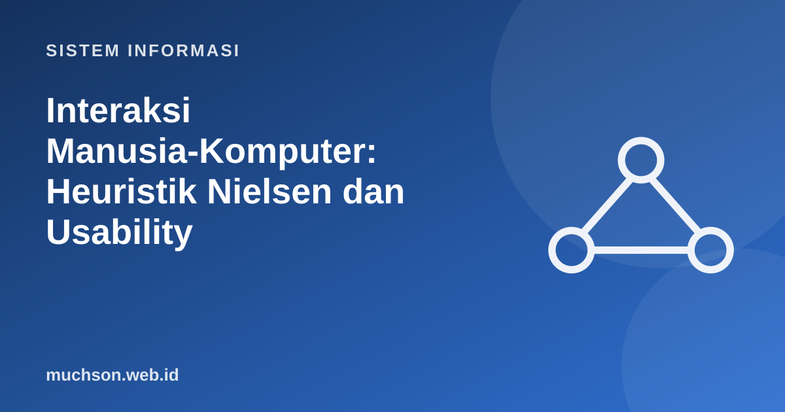

Beranda › Artikel › Sistem Informasi
Sistem InformasiInteraksi Manusia-Komputer: Heuristik Nielsen dan Usability
Sistem yang benar tetapi sulit dipakai tetap gagal: pengguna membuat kesalahan, mencari jalan pintas, atau berhenti memakainya. HCI (Human–Computer Interaction) mempelajari bagaimana manusia berinteraksi dengan sistem dan bagaimana merancang antarmuka yang efektif, efisien, dan menyenangkan.
Sebaiknya sudah paham: analisis kebutuhan

Setelah membaca dan mencoba materi ini, Anda mampu:
- menjelaskan lima atribut kegunaan (usability)
- menerapkan sepuluh heuristik Nielsen pada contoh antarmuka
- melakukan evaluasi heuristik dan pengujian kegunaan sederhana
- menghitung skor System Usability Scale (SUS)
- memakai hukum Fitts dan Hick untuk keputusan tata letak
Apa itu kegunaan?
| Atribut (Nielsen) | Pertanyaan |
|---|---|
| Learnability | Seberapa mudah pengguna baru menyelesaikan tugas pertamanya? |
| Efficiency | Seberapa cepat pengguna berpengalaman bekerja? |
| Memorability | Apakah pengguna yang lama tak memakai dapat mengingat caranya? |
| Errors | Seberapa sering dan parah kesalahan, dan seberapa mudah pulih? |
| Satisfaction | Seberapa menyenangkan? |
Sepuluh heuristik kegunaan Nielsen
Contoh perbaikan: pesan kesalahan
| Sebelum | Masalah | Sesudah |
|---|---|---|
| "Error 0x80070057" | Istilah teknis, tak ada solusi (heuristik 9) | "Berkas tidak dapat disimpan karena nama terlalu panjang. Persingkat menjadi di bawah 100 karakter." |
| "Input tidak valid" | Tidak menjelaskan bagian mana (heuristik 9) | "Nomor telepon harus berisi 10–13 angka. Contoh: 081234567890" |
| Tombol "Hapus semua" tanpa konfirmasi | Tidak mencegah kesalahan (heuristik 5) | Dialog: "Hapus 24 berkas? Tindakan ini tidak dapat dibatalkan." + tombol Batal sebagai bawaan |
Evaluasi heuristik
Beberapa evaluator ahli memeriksa antarmuka terhadap heuristik dan mencatat pelanggaran beserta tingkat keparahannya. Murah dan cepat, cocok pada tahap awal. Nielsen menemukan bahwa satu evaluator hanya menemukan sebagian masalah, dan tiga sampai lima evaluator menemukan jauh lebih banyak.
| Skala keparahan | Arti |
|---|---|
| 0 | Bukan masalah kegunaan |
| 1 | Kosmetik; perbaiki bila ada waktu |
| 2 | Masalah kecil; prioritas rendah |
| 3 | Masalah besar; prioritas tinggi |
| 4 | Bencana; harus diperbaiki sebelum rilis |
Pengujian kegunaan
Pengguna sungguhan mengerjakan tugas nyata sementara peneliti mengamati dan tidak membantu. Pengguna diminta berpikir keras (think-aloud). Yang diukur: keberhasilan tugas, waktu, kesalahan, dan komentar.
Penelitian klasik Nielsen dan Landauer menunjukkan bahwa sekitar lima pengguna sudah menemukan sebagian besar masalah kegunaan utama dalam satu putaran uji; lebih baik melakukan beberapa putaran kecil dengan perbaikan di antaranya daripada satu uji besar. Angka ini berlaku untuk menemukan masalah, bukan untuk mengukur statistik.
System Usability Scale (SUS)
SUS adalah kuesioner 10 butir dengan skala 1–5 yang menghasilkan skor 0–100. Butir ganjil bernada positif, butir genap negatif. Skor kontribusi: butir ganjil = jawaban − 1; butir genap = 5 − jawaban; jumlahkan lalu kalikan 2,5.
def skor_sus(jawaban): # 10 jawaban, nilai 1..5
total = 0
for i, j in enumerate(jawaban, start=1):
total += (j - 1) if i % 2 == 1 else (5 - j)
return total * 2.5
peserta = {
"P1": [5, 1, 4, 2, 5, 1, 5, 2, 4, 1],
"P2": [4, 2, 4, 2, 4, 2, 4, 3, 4, 2],
"P3": [3, 3, 3, 3, 3, 3, 3, 3, 3, 3],
"P4": [5, 2, 5, 1, 4, 1, 5, 1, 5, 2],
"P5": [2, 4, 2, 4, 2, 4, 2, 4, 2, 4],
}
skor = {p: skor_sus(j) for p, j in peserta.items()}
for p, s in skor.items(): print(p, s)
rata = sum(skor.values()) / len(skor)
print("rata-rata SUS:", rata, "(skor rata-rata lintas studi sekitar 68)")P1 90.0
P2 72.5
P3 50.0
P4 92.5
P5 25.0
rata-rata SUS: 66.0 (skor rata-rata lintas studi sekitar 68)
Dua hukum yang berguna
- Hukum Fitts: tombol penting dibuat besar dan dekat; tombol berbahaya (hapus) kecil dan jauh dari tombol umum. Tepi dan sudut layar "tak terhingga" besarnya karena kursor berhenti di tepi.
- Hukum Hick: waktu memilih bertambah dengan jumlah pilihan (≈ log₂ n). Kurangi pilihan, kelompokkan, dan beri bawaan yang masuk akal.
- Target sentuh: pedoman umum minimal sekitar 44–48 piksel agar nyaman pada layar sentuh.
1. Nilai pesan "Terjadi kesalahan, coba lagi nanti" terhadap heuristik.
2. Mengapa tombol "Hapus akun" tidak diletakkan dekat tombol "Simpan"?
3. Hitung SUS untuk jawaban [4,2,4,2,4,2,4,2,4,2].
4. Rancang tiga tugas untuk uji kegunaan portal akademik.
- Kegunaan: mudah dipelajari, efisien, mudah diingat, sedikit kesalahan, menyenangkan.
- Sepuluh heuristik Nielsen adalah daftar periksa evaluasi antarmuka.
- Evaluasi heuristik cepat dan murah; pengujian kegunaan dengan pengguna nyata menemukan masalah yang tak terduga.
- SUS mengukur kegunaan dengan skor 0–100.
- Hukum Fitts dan Hick membantu keputusan tata letak.
Tanya jawab
Apa bedanya UX dan UI?
Bagaimana dengan aksesibilitas?
Apakah perlu peneliti khusus?
Referensi
- Nielsen Norman Group: 10 Usability Heuristics for User Interface Design
- Jakob Nielsen, Usability Engineering (Morgan Kaufmann, 1993)
- John Brooke, SUS: A quick and dirty usability scale (1996)
- W3C: Web Content Accessibility Guidelines (WCAG) 2.2